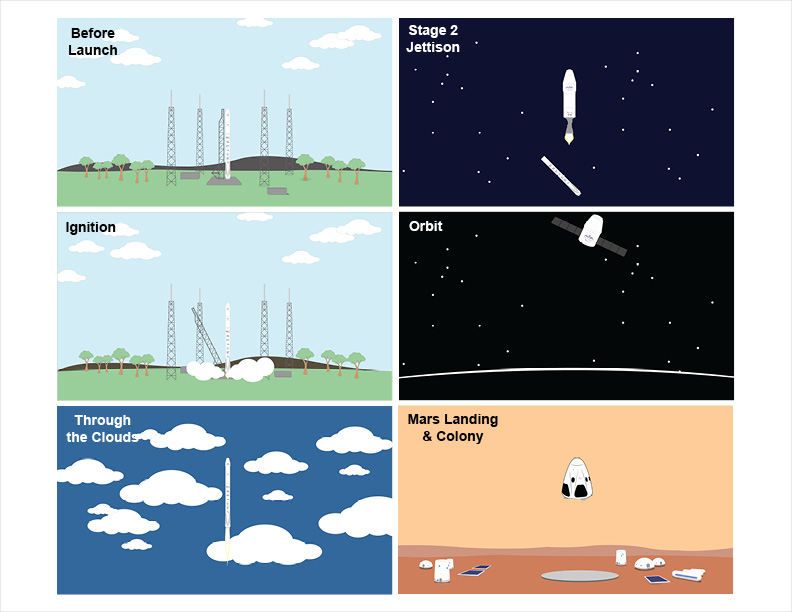

SpaceX Homage
As a designer and space enthusiast, this animation was created as an exercise in web animations as well as an homage to SpaceX for daring to lead the advancement of humankind to the stars.The Process

Concept
This animation is meant to display both SpaceX's present capabilities and future ambitions. Among several accomplishments, their Falcon 9 Rocket has lifted the Dragon capsule into orbit to rendevous with the International Space Station for resupplying missions. The Dragon 2 capsule aims to provide manned terrestrial return trips. By 2026, SpaceX aims to have humans on Mars. ** image courtesy of Space Exploration Technologies Corp. **Sketches & Brainstorming
Initial ideas were sketched out on what to include, how to present it, how it would be coded, etc. With a multitude of elements potentially involved in the animation, organization was key. Once all initial ideas were documented, they were sorted into heirarchies and grouped accordingly.
jQuery Prototype & Proof of Concept
To quickly gauge feasibility, a rudimentary prototype was built and animated using jQuery. Due to both performance concerns and to gain more experience with CSS animations, I decided to avoid jQuery animations when possible and focus on CSS animations.

Mockups
The animated visual graphics were created using Illustrator and Photoshop, based on concept sketches, visual references from watching SpaceX launches, and the official images from the SpaceX website.